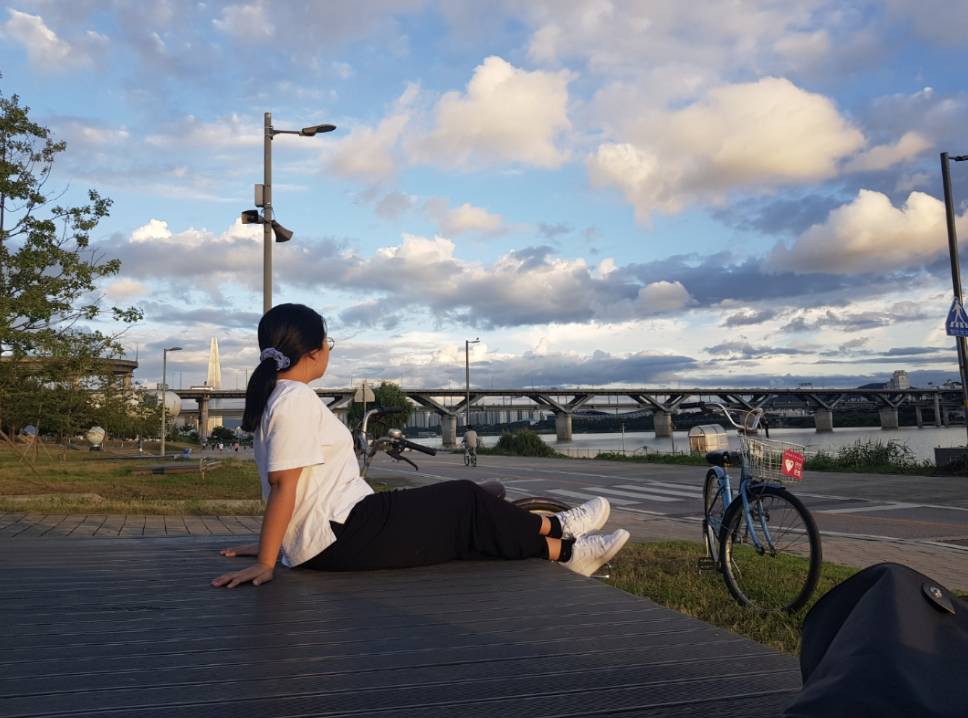

I did not know that having a semi-transparent dim background behind popups was common, but it is something I will implement in my projects from now on. I also was not aware that putting an "X" was not recommended, but I did struggle with not knowing where exactly to put it without it looking off on the screen.I agree with placing it after 2 seconds delay, but I remember getting frustrated by that once while playing a game because I did not understand why it did not give me all the options from the beginning. Another great tip was creating an intuitive 'drop-zone' so the user does not need to guess where an item goes and starts dropping it in random places on the screen. I have definitely done that before in a game.

Amy Lee, 2023
1. Why and how is this image interesting? Tell us something we would not know by looking at the image alone. I find this image interesting because of the scenery (ex. Beautiful sky). But, what the viewer does not know is that there is the most expensive apartment in South Korea left of my head.
2. How does this image relate to the topic of your archive or collection? This relates to my topic because it is about my trip to South Korea with my mom, and this was my favorite part about the trip (biking around the Han-gang lake).
3. How does your collection or archive say something (i.e. tell a story) about you? I think so, because I like to just sit in nature and ponder about random topics, and it is pretty clear that I am doing that in this picture.
1. What is this image about? It is about taking in the view next to a lake. The girl in the photo looks very relaxed. It looks like the girl biked there.
2. What are the most interesting aspects of this image? Describe using some of the language in the introduction to this assignment. The most interesting aspects is the girl because she is in the center. The crosswalk and the bridge is leading to the girl. Pretty clouds.
3. What are the most obvious and the most mysterious aspects of this image? The most obvious aspect is that the girl is the subject, and she is relaxing and taking in the view. The most mysterious aspect is where she is at and where she is going to next.
These pictures almost look photoshopped because of how bizarre some of the people are in the pictures. For example, the third photo looks like the man in the murky water is photoshopped. It does not look real at all.
I found the "Our History" page of Google fascinating because it reminded me of some of the student work that was shown in class with the scrolling through images and clicking on icons for more information about it. It is very aesthetically pleasing also. I hope to create something like this in the future, either in this class or a side project. I think it is simple yet a beautiful interaction with the lines. I love the hover effect on the plus icons, too. I like that you can click and scroll as well, it gives another way of interacting with the page while keeping the clean and aesthetic feel.
I think model windows grabs the user's attention no matter what because of the way it restricts your ability to access the main page without interacting with it first. From my personal experience, it was usually not by choice that it popped up, like the medium page that tells you to sign up for a premium account halfway through the article. It is usually disheartening to see it, especially when you are hurrying to do an assignment for example. So, I strongly agree with the part of the article where it talks about not using it as an error, success, or warning sign, because it can be quite alarming. I thought the anatomy of a modal window was very helpful, and I can use it as a guide when creating modal windows in the future.
I completely agree with the article, although some parts really go in detail about what is good or not. I would say from my previous experiences that what is most important point in this article is putting the easiest prompts first like name, email, and year, then the questions that require long answers go in the very end. Then, people usually fill out the beginning and start filling out the long-answers, they have already "commited," and they are more likely to come back and fill out the rest of the form. Another important point made was making the required fields as clear as possible, because sometimes I submit the form to see if I filled out all the forms so it tells me after I submit if I missed anything, but this is such a hassle and I am afraid that all the information will be deleted after submitting.
I like that for a lot of student organizations, they make the "critical thinking" questions optional, but still includes it so if anyone has any thoughts they want to share with the club, they can. This fosters a welcoming environment. Also, they usually ask for the name, year, and email first before getting into the actual content that requires some decision making.